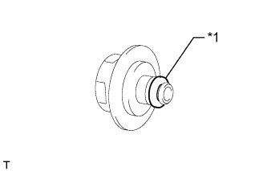

ДЕМПФЕР ПУЛЬСАЦИЙ ДАВЛЕНИЯ В ТОПЛИВНОЙ СИСТЕМЕ > УСТАНОВКА |
| 1. УСТАНОВИТЕ ДЕМПФЕР ПУЛЬСАЦИЙ ДАВЛЕНИЯ В ТОПЛИВНОЙ СИСТЕМЕ В СБОРЕ |
|  |
Нанесите тонкий слой шпиндельного масла или бензина на новое кольцевое уплотнение и установите его на демпфер пульсаций давления в топливной системе.
| *1 | Новое кольцевое уплотнение |
Установите демпфер пульсаций давления в топливной системе в топливную рампу.
Установите держатель регулятора давления в топливной системе.
| 2. УСТАНОВИТЕ РАСШИРИТЕЛЬНЫЙ БАЧОК НА ВПУСКЕ ВОЗДУХА |
Установите расширительный бачок на впуске воздуха (Нажмите здесь).
| 3. ПОДСОЕДИНИТЕ ПРОВОД К ОТРИЦАТЕЛЬНОМУ ВЫВОДУ АККУМУЛЯТОРНОЙ БАТАРЕИ |
| 4. ПРОВЕРЬТЕ, НЕТ ЛИ УТЕЧЕК ТОПЛИВА |
После технического обслуживания топливной системы проверьте ее на отсутствие утечек топлива.
Подсоедините портативный диагностический прибор к DLC3.
Включите зажигание (IG) и портативный диагностический прибор.
Войдите в следующие меню: Powertrain / Engine and ECT / Active Test / Control the Fuel Pump/Speed.
Убедитесь в отсутствии утечек топлива из топливной системы.
При обнаружении утечки топлива отремонтируйте или замените детали, если необходимо.
Выключите зажигание.
Отсоедините портативный диагностический прибор от DLC3.